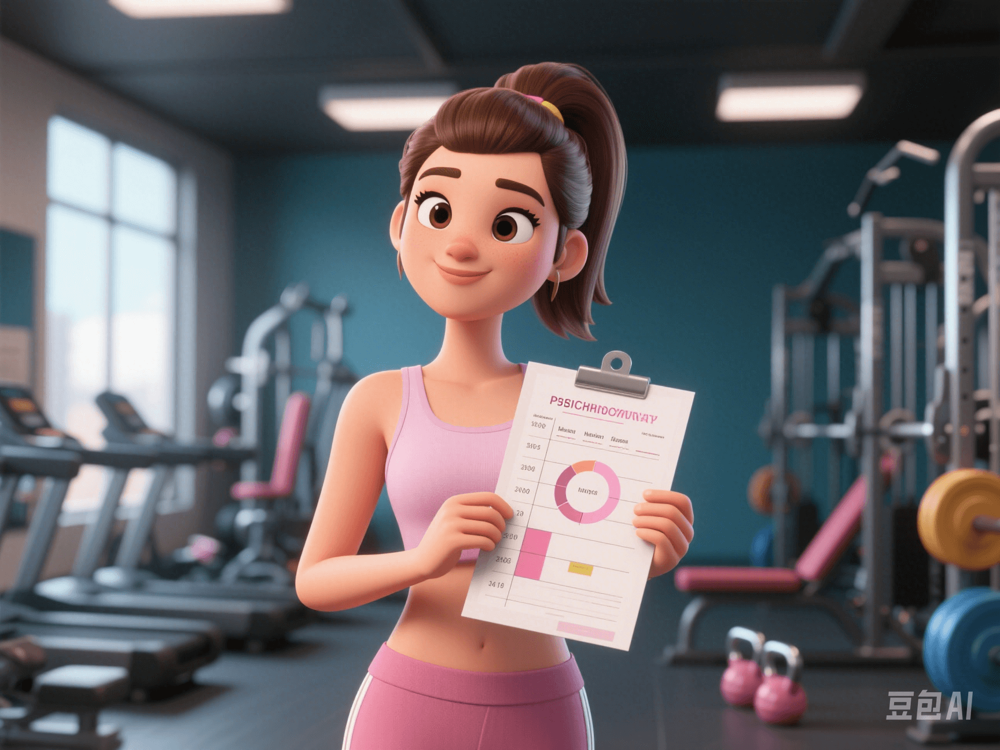

Aligning Female Menstrual Cycle with Training Plans: Exercise in Sync with Hormonal Rhythms!
PeaceLove.Top Insights :2025-04-12
🩸 Introduction
In the field of fitness training, 'tailor - made' has become the key word. For women, a more scientific way of customized training is to adjust the training intensity and type according to their own menstrual cycle. 💡 Research has found that arranging training according to the fluctuations of estrogen and progesterone during the menstrual cycle can not only improve exercise performance but also reduce the risk of fatigue and injury. It is a new trend for women's healthy and efficient exercise! 🔥
📅 Four Phases of the Menstrual Cycle & Training Advice 🏃♀️
A woman's menstrual cycle is generally about 28 days and can be roughly divided into the following four phases. The hormonal levels and physical states are different in each phase, so the training content should also 'change accordingly'.
1️⃣ Menstrual Phase (Days 1 - 5): 🩸 Low - energy Phase, Rest as the Priority
- Hormonal state: Estrogen and progesterone are at their lowest points.
- Physical feeling: Low energy, prone to fatigue or pain.
- Training advice: 🔁 Gentle stretching, light - intensity yoga, walking, and deep - breathing training.
- 💬 Key word: 'Listen to your body and allow yourself to slow down'.
🧘♀️ Do some easy yoga and stretching to let your uterus work in a relaxed way.
2️⃣ Follicular Phase (Days 6 - 14): 🔥 Golden Training Phase, Go for It!
- Hormonal state: Estrogen rises rapidly, with stable mood and abundant energy.
- Training advice: ✅ High - intensity interval training (HIIT), strength training, and aerobic training are all very suitable.
- 🧠 Benefits: The muscle synthesis efficiency is high during this phase, and the exercise recovery speed is fast, which is suitable for breaking through bottlenecks!
🏋️♀️ 💥 *'If not today, when to train your legs!' Arrange sprints, squats, and deadlifts!*
3️⃣ Ovulation Phase (Days 14 - 16): ⚠️ Powerful but Be Careful
- Hormonal state: Estrogen reaches its peak, and progesterone begins to rise.
- Training advice: It's okay to continue high - intensity training 🆗, but note that the body's coordination decreases, and it's easy to get injured ⚠️.
- 👟 Strengthen warm - up, pay attention to the standardization of movements, and avoid pursuing excessive loads.
📌 You're strong, but don't forget the 'high - energy warning'. Train for steady progress.
4️⃣ Luteal Phase (Days 17 - 28): 🌙 Recovery and Conditioning Phase
- Hormonal state: Progesterone is dominant, and there may be mood swings, rising body temperature, and increased fatigue.
- Training advice: ○ ☁️ Moderate strength training can be carried out in the early stage. ○ 🛏️ As the menstrual period approaches, light - intensity aerobic exercises (such as brisk walking and yoga) and stretching for relaxation are suitable.
- 🧘♀️ This phase is more suitable for'restorative training'. Self - care activities such as meditation, foot - soaking, and massage can also be added.
✨ This is not 'being lazy' but 'intelligently resting'.
📊 Practical Tips: How to Track the Cycle and Match the Training? 📲
- 📅 Use apps to record the menstrual cycle (such as Flo, Clue, etc.).
- 🧘♀️ Write the training plan in the cycle table for scientific scheduling.
- 💬 Communicate the cycle changes with the coach and adjust the goals in a timely manner.
✅ Tips: Benefits of Cycle - based Training
- ✅ Avoid over - fatigue and sports injuries.
- ✅ Improve exercise performance and efficiency.
- ✅ Better control weight and the body - shaping process.
- ✅ Strengthen body awareness and establish an intimate relationship with the body 🤝.
💬 A Final Message for You Who Are Working Hard:
**'You're not lazy; you're following the body's intelligent rhythm. Training is not coercion but cooperation.'** 💓🌈
👩🔬💪 Move in sync with your body's rhythm and make fitness a smart and gentle persistence!